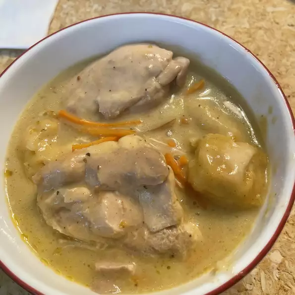

Slow Cooker Chicken and Dumplings

Description
See
recipe
Ingredients
- 4 skinless, boneless chicken breast halves
- 2 (10.75 ounce) cans condensed cream of chicken soup
-
2 (10 ounce) packages refrigerated biscuit dough, torn into pieces
Steps
-
Place the chicken, butter, soup, and onion in a slow cooker, and fill
with enough water to cover.
-
Cover, and cook for 5 to 6 hours on High. About 30 minutes before
serving, place the torn biscuit dough in the slow cooker. Cook until the
dough is no longer raw in the center.
Return to main page